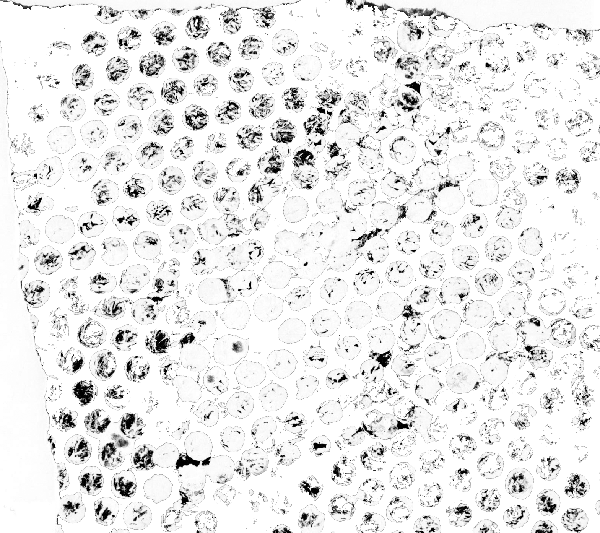

In making for ourselves a place to live, we first spread a parasol to throw a shadow on the earth, and in the pale light of the shadow we put together a house. There are of course roofs on Western houses too, but they are less to keep off the sun than to keep off the wind and the dew; even from without it is apparent that they are built to create as few shadows as possible and to expose the interior to as much light as possible. If the roof of a Japanese house is a parasol, the roof of a Western house is no more than a cap, with as small a visor as possible so as to allow the sunlight to penetrate directly beneath the eaves. There are no doubt all sorts of reasons-climate, building materials-for the deep Japanese eaves. The fact that we did not use glass, concrete, and bricks, for instance, made a low roof necessary to keep off the driving wind and rain. A light room would no doubt have been more convenient for us, too, than a dark room.
The quality that we call beauty, however, must always grow from the realities of life, and our ancestors, forced to live in dark rooms, presently came to discover beauty in shadows, ultimately to guide shadows towards beauty's ends.
And so it has come to be that the beauty of a Japanese room depends on a variation of shadows, heavy shadows against light shadows-it has nothing else. Westerners are amazed at the simplicity of Japanese rooms, perceiving in them no more than ashen walls bereft of ornament.Their reaction is understandable, but it betrays a failure to comprehend the mystery of shadows. Out beyond the sitting room, which the rays of the sun can at best but barely reach, we extend the eaves or build on a veranda, putting the sunlight at still greater a remove.